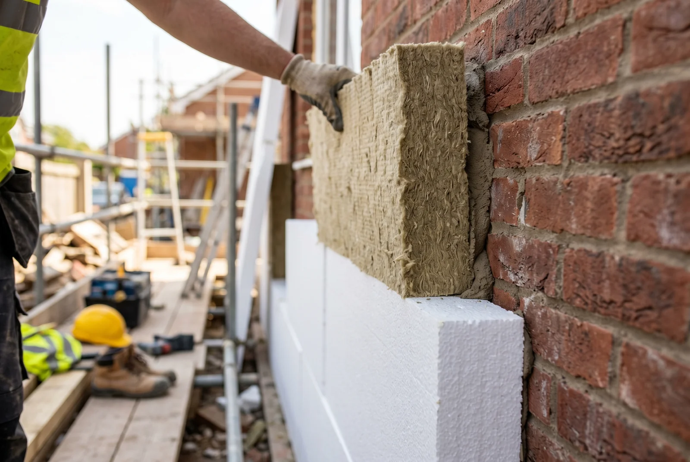

Inhaltsverzeichnis
Kurz erklärt: Was ist ein GEG-Nachweis?
Der GEG-Nachweis ist ein öffentlich-rechtliches Dokument, das die Erfüllung der Anforderungen des Gebäudeenergiegesetzes (GEG) nachweist. Es basiert auf dem früheren EnEV-Nachweis und wurde mit der Einführung des GEG im Jahr 2020 neu benannt. Der Nachweis muss zwingend mit dem Bauantrag eingereicht werden und wird von der zuständigen Bauaufsicht überprüft.
Der GEG-Nachweis ist erforderlich bei:
- Neubauten: Alle neuen Gebäude mit einer beheizten oder klimatisierten Nutzfläche über 50 m²
- Wesentliche Sanierungen: Wenn mehr als 25 Prozent der Gebäudehülle erneuert werden
- Erweiterungen: Wenn beheizte oder klimatisierte Räume hinzukommen
Historisch betrachtet hatte jede Novelle des Energierechts einen anderen Namen. Die EnEV 2014 kannte noch den „EnEV-Nachweis" – seit 2020 heißt das Dokument gemäß des Gebäudeenergiegesetzes einfach „GEG-Nachweis".

Kurz erklärt: Was ist ein Energieausweis?
Der Energieausweis ist ein Dokument zur Bewertung der Energieeffizienz eines Gebäudes und richtet sich primär an Käufer, Mieter und andere Interessenten. Er zeigt auf einen Blick, wie effizient ein Gebäude mit Energie umgeht. Es gibt zwei Varianten des Energieausweises:
1. Der Verbrauchsausweis – basiert auf echten Verbrauchsdaten der letzten drei Jahre (Heizkosten-Abrechnungen). Er ist kostengünstiger (ab ca. 50–120 Euro) und lässt sich schnell ausstellen, gibt aber keinen Aufschluss über die Bauqualität.
2. Der Bedarfsausweis – berechnet den theoretischen Energiebedarf auf Basis der Gebäudeeigenschaften (Dämmung, Fenster, Heizanlage, Baumaterial). Er kostet mehr (ab ca. 300–700 Euro), ist aber aussagekräftiger für die langfristige Effizienz, da er nicht vom individuellen Verhalten abhängt.
Der Energieausweis ist gültig für 10 Jahre und wird benötigt bei:
- Verkauf von Immobilien
- Vermietung oder Verpachtung
- Neubau (zusätzlich zum GEG-Nachweis)
- Großflächige Sanierungen (je nach Bundesland unterschiedlich)
GEG-Nachweis vs. Energieausweis — die 5 entscheidenden Unterschiede
Die beiden Dokumente unterscheiden sich in mehreren grundlegenden Punkten. Folgende Tabelle zeigt die wesentlichsten Unterschiede:
| Kriterium | GEG-Nachweis | Energieausweis |
|---|---|---|
| Zweck | Nachweisen der Einhaltung von Baurecht | Information für Käufer, Mieter, Interessenten |
| Rechtsgrundlage | Gebäudeenergiegesetz (GEG) | Energieeinsparverordnung (EnEV) bzw. GEG |
| Pflichtanlass | Neubau, Sanierung >25 %, Bauantrag | Verkauf, Vermietung, Neubau, Sanierung |
| Berechnungsmethode | DIN 18599 (detailliert, gebäudespezifisch) | Vereinfachte Verfahren (Bedarfs- oder Verbrauchsmethode) |
| Aussteller | Qualifizierte Energieberater, Ingenieure, Architekten | Energieberater, Architekten, Heizungsbauer (teilweise) |
| Kosten | ca. 800–1.200 Euro | Verbrauch: 50–120 Euro | Bedarf: 300–700 Euro |
| Gültigkeit | Unbegrenzt (keine Verfallsdatum) | 10 Jahre |
| Adressat | Bauaufsicht, Behörden | Makler, Käufer, Mieter, Öffentlichkeit |
Unser Tipp: Energieausweis verstehen: Was bedeutet Ihre Effizienzklasse? – Erfahren Sie, wie Sie die Effizienzklasse richtig interpretieren und was sie für Ihren Hausverkauf bedeutet.
Häufige Verwechslung: Warum der Energieausweis kein GEG-Nachweis ist
Es ist eine weit verbreitete Verwechslung unter Hausbesitzern und Bauherren: Viele denken, dass ein Energieausweis als Nachweis für die Baugenehmigung ausreicht. Das ist ein Irrtum, der zu ernsthaften Problemen führen kann.
Die Bauaufsicht akzeptiert einen Energieausweis nicht als Ersatz für den GEG-Nachweis. Der Grund ist einfach: Der Energieausweis ist ein Transparenzdokument für den Markt (Käufer und Mieter), während der GEG-Nachweis ein Baurecht-Dokument ist. Der GEG-Nachweis muss nach der präziseren DIN 18599 berechnet werden und wird von der Bauaufsicht vor Baubeginn überprüft.
Was passiert, wenn Sie nur einen Energieausweis haben, aber einen GEG-Nachweis brauchen?
- Die Baugenehmigung wird verweigert oder ist ungültig
- Sie dürfen nicht mit dem Bau beginnen
- Im schlimmsten Fall droht eine Ordnungswidrigkeit mit Geldbuße
- Eine nachträgliche Legalisierung ist aufwendig und kostspielig
Deshalb ist es wichtig, die richtige Anforderung für Ihre Situation zu klären, bevor Sie einen Energieberater beauftragen.
Wann brauchen Sie welches Dokument? — Entscheidungshilfe
Um Klarheit zu schaffen, haben wir die fünf häufigsten Szenarien für Sie zusammengefasst:
Szenario 1: Neubau
Sie benötigen GEG-Nachweis + Energieausweis. Der GEG-Nachweis ist für die Baugenehmigung zwingend erforderlich. Der Energieausweis wird nach Fertigstellung benötigt, falls Sie das Gebäude später verkaufen oder vermieten möchten. Beauftragen Sie beide Dokumente zusammen – das spart Zeit und Kosten.
Szenario 2: Hausverkauf (Bestandsgebäude)
Sie benötigen nur Energieausweis. Der Verkäufer muss einen gültigen Energieausweis vorlegen – dies ist gesetzlich vorgeschrieben. Wählen Sie den Verbrauchsausweis (günstig, schnell) oder Bedarfsausweis (aussagekräftig), je nachdem, wie modern das Gebäude ist.
Szenario 3: Größere Sanierung mit Bauantrag
Sie benötigen GEG-Nachweis + ggf. neuer Energieausweis. Wenn Sie einen Bauantrag für eine wesentliche Sanierung (>25 % der Hülle) stellen, ist der GEG-Nachweis Pflicht. Ein neuer Energieausweis wird sinnvoll, um die verbesserte Energieeffizienz zu dokumentieren.
Szenario 4: Heizungstausch nach GEG 2024
Sie benötigen Erfüllungserklärung (65%-EE-Nachweis). Beim Austausch von Heizungsanlagen müssen Sie nachweisen, dass die neue Heizung zu mindestens 65 % erneuerbare Energien nutzt oder in ein Wärmenetz eingebunden ist. Dies ist ein spezieller Nachweis, kein klassischer GEG-Nachweis oder Energieausweis.
Szenario 5: Vermietung
Sie benötigen nur Energieausweis. Bei der Neuvermietung oder Pachtung muss ein Energieausweis vorgelegt werden. Ein GEG-Nachweis ist für bestehende Mietgebäude nicht erforderlich, es sei denn, Sie führen eine wesentliche Sanierung durch.
Unser Tipp: Energieausweis richtig lesen: Verbrauchsausweis vs. Bedarfsausweis – Finden Sie heraus, welche Variante für Ihre Immobilie sinnvoller ist und was die Unterschiede bedeuten.
So kommen Sie an Ihren GEG-Nachweis
Wenn Sie einen GEG-Nachweis benötigen, folgen Sie diesen Schritten:
Schritt 1: Energieberater beauftragen
Suchen Sie einen qualifizierten Energieberater, Ingenieur oder Architekten. Die Person muss in der „Liste der Fachkundigen" eingetragen sein, die von der DENA (Deutsche Energie-Agentur) oder Kammern gepflegt wird. Nicht jeder Energieberater darf einen GEG-Nachweis ausstellen.
Schritt 2: Unterlagen bereitstellen
Bereiten Sie folgende Dokumente vor:
- Detaillierte Architektur- und Baupläne
- Spezifikationen aller Bauteile (Fenster, Dämmung, Heizanlage, Lüftung)
- Informationen zu Energieversorgung und Wärmeerzeugung
- Grundflächendaten und Orientierung des Gebäudes
Schritt 3: Nachweis erstellen lassen
Der Energieberater berechnet den Nachweis nach DIN 18599. Dies dauert typischerweise 3–4 Wochen, abhängig von der Gebäudekomplexität und der Verfügbarkeit aller Unterlagen.
Schritt 4: Mit Bauantrag einreichen
Der GEG-Nachweis muss vor oder spätestens mit dem Bauantrag bei der zuständigen Bauaufsicht eingereicht werden. Ohne diesen Nachweis erfolgt keine Baugenehmigung.
Wer darf den GEG-Nachweis erstellen?
Laut GEG sind folgende Fachleute befugt:
- Architekten mit berufsrechtlicher Qualifikation
- Ingenieure (Hoch- oder Tiefbau, spezialisiert auf Energieeffizienz)
- Qualifizierte Energieberater (müssen vom BAFA oder einer Kammer zertifiziert sein)
Typische Kosten und Zeitrahmen
- Kosten: 800–1.200 Euro (abhängig von Gebäudegröße und -komplexität)
- Bearbeitungszeit: 3–4 Wochen nach Eingang aller Unterlagen
- Zusätzliche Kosten: Für spezielle Beratung oder Optimierungen können weitere Gebühren anfallen
Unser Tipp: Energieausweis online vs. beim Energieberater – Erfahren Sie, wann ein Online-Energieausweis sinnvoll ist und wann Sie einen persönlichen Energieberater brauchen.
FAQ
Was kostet ein GEG-Nachweis?
Die Kosten für einen GEG-Nachweis liegen in der Regel zwischen 800 und 1.200 Euro, abhängig von der Gebäudegröße und -komplexität. Der Nachweis muss von einem qualifizierten Energieberater, Ingenieur oder Architekten erstellt werden und erfordert detaillierte Gebäudedaten sowie technische Berechnungen nach der DIN 18599. Für kleinere Gebäude können die Kosten auch darunter liegen, für sehr komplexe Bauten können sie höher ausfallen.
Ist ein GEG-Nachweis Pflicht?
Ja, ein GEG-Nachweis ist Pflicht bei Neubauten, wesentlichen Sanierungen von mehr als 25 Prozent der Gebäudehülle und Erweiterungen von beheizten oder klimatisierten Räumen. Der Nachweis muss mit dem Bauantrag eingereicht werden und wird von der Bauaufsicht überprüft. Ohne GEG-Nachweis erfolgt keine Baugenehmigung. Für bestehende Gebäude, die Sie verkaufen oder vermieten möchten, ist statt des GEG-Nachweises der Energieausweis erforderlich.
Wann brauche ich keinen GEG-Nachweis?
Sie benötigen keinen GEG-Nachweis bei kleineren Renovierungen und Instandhaltungen ohne Bauantrag, beim bloßen Austausch von Bauteilen ohne Erweiterung beheizter Fläche, beim Verkauf oder Vermietung von Bestandsgebäuden (hier ist nur der Energieausweis nötig) und bei Gebäuden mit weniger als 50 m² beheizter oder klimatisierter Nutzfläche. Auch unter Denkmalschutz stehende Gebäude können Ausnahmen haben – fragen Sie Ihre Denkmalschutzbehörde.
Kann ich GEG-Nachweis und Energieausweis gleichzeitig erstellen lassen?
Ja, das ist möglich und aus wirtschaftlicher Sicht sinnvoll. Bei Neubauten und größeren Sanierungen können Sie beide Dokumente gemeinsam beauftragen. Dies spart Zeit und Kosten, da viele Daten sich überschneiden und nur einmalig erfasst werden müssen. Der GEG-Nachweis ist für die Genehmigung erforderlich, der Energieausweis für spätere Verkauf oder Vermietung. Viele Energieberater bieten Kombiangebote an, die günstiger sind als beide Dokumente einzeln.
Ersetzt der Bedarfsausweis den GEG-Nachweis?
Nein, der Bedarfsausweis ersetzt den GEG-Nachweis nicht. Ein Bedarfsausweis ist eine Variante des Energieausweises (neben dem Verbrauchsausweis) und dient der Bewertung der Energieeffizienz für Käufer und Mieter. Der GEG-Nachweis hat eine andere Rechtsgrundlage und ist für die Baugenehmigung erforderlich. Sie benötigen oft beide Dokumente: den GEG-Nachweis für die Bauaufsicht und den Bedarfsausweis später für den Immobilienwechsel.